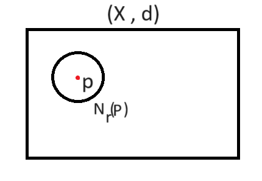

در این صفحه، به مفاهیم مهمی مانند فضاهای متریک، همسایگی، نقاط درونی، بیرونی، مرزی و بستار یک مجموعه میپردازیم. این مفاهیم در توپولوژی و تحلیل ویژه نقش حیاتی دارند.
هدف فراهم اوردن این بستر برای آموزش نقاط درونی ، بیرونی ، مرزی و بستار یک مجموعه برای شما کاربر گرامی هست ولی به جهت یادگیری راحت تر این مطالب توضیحات مختصری درباره فضاهای متریک و همسایگی نقاط داده شده است.
تعاریف را با دقت مطالعه کرده و سپس برای یادگیری عمیق سایر بخش هارا بررسی کنید.
توجه: با ضربه زدن بر روی بخش مورد نظر از منوی بالا به قسمت توضیحات آن بخش بروید.
تعریف: فرض کنید \( X \neq \emptyset \) یک مجموعه باشد. تابع \( d: X \times X \to \mathbb{R} \) یک متریک روی \( X \) نامیده میشود اگر خواص زیر را داشته باشد:
در این صورت X را همراه d فضای متریک می گویند.(X ,d)
روی فضای \(\mathbb{R}^n\) (یعنی مجموعه همه n-تایی مرتب \((x_1, \dots, x_n)\)) متریکهای زیر قابل تعریف هستند:
\[ d_e(u, v) = \sqrt{(x_1 - y_1)^2 + (x_2 - y_2)^2 + \cdots + (x_n - y_n)^2} = \sqrt{\sum_{i=1}^n (x_i - y_i)^2} \]
که در آن \( u = (x_1, \dots, x_n) \) و \( v = (y_1, \dots, y_n) \).
\[ d_1(u, v) = \sum_{i=1}^n |x_i - y_i| \]
که در آن \( u = (x_1, \dots, x_n) \) و \( v = (y_1, \dots, y_n) \).
\[ d_m(u, v) = \max_{1 \leq i \leq n} |x_i - y_i| \]
که در آن \( u = (x_1, \dots, x_n) \) و \( v = (y_1, \dots, y_n) \).
\[ d_p(u, v) = \left( \sum_{i=1}^n |x_i - y_i|^p \right)^{1/p} \]
که در آن \( u = (x_1, \dots, x_n) \) و \( v = (y_1, \dots, y_n) \).
نکته:برای \( p = 2 \) دقیقاً متریک اقلیدسی به دست میآید.
همه این توابع متریکهای معتبر روی \(\mathbb{R}^n\) هستند و فضای \(\mathbb{R}^n\) را به یک فضای متریک تبدیل میکنند.
یکی از مهم ترین فضاهای متریک ، فضای متریک گسسته است.
فرض کنید \( X \neq \emptyset \) یک مجموعه دلخواه باشد. تابع زیر را تابع فاصله d تعریف می کنیم:
آنگاه \( d \) یک متریک روی \( X \) است و به آن متریک گسسته (یا متریک جدا) گفته میشود.
------------------------------------------------------
همسایگی یک نقطه مانند P با شعاع r مجموعه تمام نقاطی است که از نقطه p به اندازه کمتر از r فاصله دارند.
همسایگی به مرکز p ∈ X و شعاع r > 0 عبارت است از:
\(N_r(p)\) نشان دهنده همسایگی نقطه p به شعاع r است. 
این مفهوم پایه درک نقاط درونی و بیرونی است.
فرض کنید (X , d) یک فضای متریک باشد ، p ∈ X , A ⊆ X.
هر نقطه را نقطه درونی A گوییم هرگاه :
نقطه x نقطه درونی مجموعه A⊆ℝ است اگر وجود داشته باشد δ>0 بهطوری که بازه باز (p-δ, p+δ) کاملاً زیرمجموعه Aباشد.
مجموعه همه نقاط درونیA را داخلی A یا Int(A) یا °A مینامند.
برای A = [0,1] در فضای متریک \(\mathbb{R}\)، نقاط درونی همه نقاط بازه (0,1) هستند.
نقاط ۰ و ۱ درونی نیستند، چون هر بازه بازی اطرافشان شامل نقاطی خارج از [0,1] است.
بنابراین Int([0,1]) = (0,1).
(۲) اگر \( p \) را نقطه بیرونی \( A \) مینامیم اگر که \( p \) نقطه درونی \( A^c \) باشد. یعنی:
نقطه x نقطه بیرونی مجموعه A است اگر نقطه درونی متمم A (یعنی \(A^c\)) باشد. بهعبارت دیگر، وجود دارد δ>0 بهطوری که بازه باز (p-δ, p+δ) کاملاً زیرمجموعه A^c باشد.
مجموعه نقاط برونی A را با Ext(A) نمایش می دهیم.
برای A = [0,1] در فضای ℝ، نقاط بیرونی همه نقاطی هستند که یا کوچکتر از ۰ یا بزرگتر از ۱ باشند و فاصلهشان از [0,1] مثبت باشد.
مثلاً همه نقاط در (∞+,1) ∪ (0,∞-) نقاط بیرونی هستند.
p را نقطه مرزی گویند هرگاه نه درونی نه بیرونی باشد به عبارت دیگر یعنی هر همسایگی در نقطه p باید هم A را قطع کندهم متمم A را. (P ممکن است عضو A باشد یا نباشد)یعنی:
نقطه x نقطه مرزی مجموعه A است اگر هر بازه باز حاوی x هم شامل نقطهای از A و هم شامل نقطهای از A^c باشد یعنی هر چقدر هم همسایگی کوچکی اطرافش بگیریم، همیشه هم نقطهای از داخل مجموعه و هم نقطهای از خارج مجموعه در آن همسایگی وجود دارد.
مجموعه نقاط مرزی را Bd(A) یا A∂ میگویند.
برای A = (0,1)، نقاط مرزی ۰ و ۱ هستند.
برای A = [0,1] نیز نقاط مرزی همچنان ۰ و ۱ هستند.
فرض کنید \((X, d)\) یک فضای متریک و \( A \subseteq X \) باشد.
تعریف: بستار \( A \) (که با \( \overline{A} \) یا \( \operatorname{Cl}(A) \) نشان داده میشود) برابر است با اتحاد \( A \) و مجموعه نقاط مرزی آن:
\[ \overline{A} = A \cup \partial A \]
به عبارت دیگر، بستار \( A \) شامل همه نقاط خود \( A \) به علاوه همه نقاط مرزی \( A \) است.
اثبات کنید: \( A \subseteq \overline{A} \).
فرض می کنیم \( x_0 \in A \)
چون \(d(x_0, x_0) = 0 < r \) پس \( x_0 \in N_r(x_0) \)
بنابراین \[ \forall r > 0 : \quad N_r(x_0) \cap A \neq \emptyset\]
پس\( x_0 \in \overline{A} \)
در نتیجه \( A \subseteq \overline{A} \).